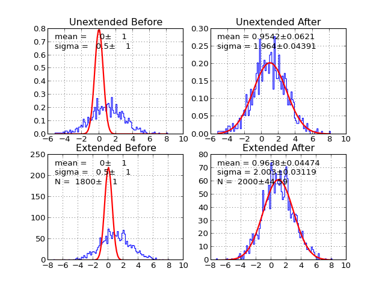
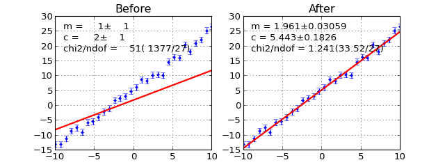
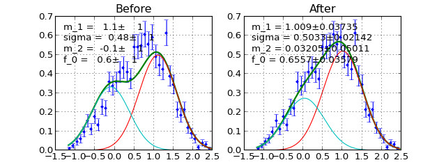

Various estimators.
UnbinnedLH(f, data, weights=None, extended=False, extended_bound=None, extended_nint=100, badvalue=-100000)
__init__(self, f, data , weights=None, badvalue=-100000)
Construct -log(unbinned likelihood) from callable f and data points data. Currently can only do 1D fit.
Arguments
f callable object. PDF that describe the data. The parameters are parsed using iminuit’s describe. The first positional arguement is assumed to be independent parameter. For example:
def gauss(x, mu, sigma):#good pass def bad_gauss(mu, sigma, x):#bad passdata 1D array of data.
weights Optional 1D array of weights. Default None(all 1).
badvalue Optional number. The value that will be used to represent log(lh) (notice no minus sign). When the likelihood is <= 0. This usually indicate your PDF is faraway from minimum or your PDF parameter has gone into unphysical region and return negative probability density. This should be a large negative number so that iminuit will avoid those points. Default -100000.
extended Set to True for extended fit. Default False. If Set to True the following term is added to resulting negative log likelihood
\[\textrm{ext_term} = \int_{x \in \textrm{extended_bound}}f(x, args, \ldots) \textrm{d} x\]extended_bound Bound for calculating extended term. Default None(minimum and maximum of data will be used).
extended_nint number pieces to sum up as integral for extended Term(using simpson3/8). Default 100.
Note
There is a notable lack of sum_w2 for unbinned likelihood. I feel like the solutions are quite sketchy. There are multiple ways to implement it but they don’t really scale correctly. If you feel like there is a correct way to implement it feel free to do so and write document telling people about the caveat.
Compute sum of -log(lh) given positional arguments. Position argument will be passed to pdf with independent vairable from data is given as the frist argument.
Draw comparison between histogram of data and pdf.
Arguments
minuit Optional but recommended iminuit.Minuit object. If minuit is not None, the pdf will be drawn using minimum value from minuit and parameters and error will be shown. If minuit is None, then pdf will be drawn using argument from the last call to __call__. Default None
bins number of bins for histogram. Default 100.
ax matplotlib axes. If not given it will be drawn on current axes gca().
bound bound for histogram. If None is given the bound will be automatically determined from the data. If you given PDF that’s normalied to a region but some data is not within the bound the picture may look funny.
parmloc location of parameter print out. This is passed directy to legend loc named parameter. Default (0.05,0.95).
nfbins how many point pdf should be evaluated. Default 200.
print_par print parameters and error on the plot. Default True.
args Optional. If minuit is not given, parameter value is determined from args. This can be dictionary of the form {‘a’:1.0, ‘b’:1.0} or list of values. Default None.
errors Optional dictionary of errors. If minuit is not given, parameter errors are determined from errors. Default None.
- show_errbars Show error bars. Default ‘normal’
‘normal’ : error = sqrt( sum of weight ) ‘sumw2’ : error = sqrt( sum of weight**2 )
None : no errorbars (shown as a step histogram)
Returns
((data_edges, datay), (errorp,errorm), (total_pdf_x, total_pdf_y), parts)
Example
(Source code, png, hires.png, pdf)

BinnedLH(f, data, bins=40, weights=None, bound=None, badvalue=1000000, extended=False, use_w2=False, nint_subdiv=1)
Create a Poisson Binned Likelihood object from given PDF f and data (raw points not histogram). Constant term and expected minimum are subtracted off (aka. log likelihood ratio). The exact calculation will depend on extended and use_w2 keyword parameters.
\(h_i\) is sum of weight of data in ith bin.
\(b_i\) is the width of ith bin.
\(N\) is total number of data. \(N = \sum_i h_i\).
\(E_i\) is expected number of occupancy in ith bin from PDF calculated using average of pdf value at both sides of the bin \(l_i, r_i\). The definition for \(E_i\) depends whether extended likelihood is requested.
If extended likelihood is requested (extended=True):
If extended likelihood is NOT requested (extended=False):
Note
You are welcome to patch this with a the using real area. So that, it’s less sensitive to bin size. Last time I check ROOFIT used f evaluated at midpoint.
\(s_i\) is a scaled factor. It’s 1 if sum_w2=False. It’s \(s_i = \frac{h_i}{\sum_{j \in \textrm{bin_i}} w_j^2}\) if sum_w2=True. The factor will scale the statistics to the unweighted data.
Note
You may wonder why there is \(h_i-E_i\) added at the end for each term of the sum. They sum up to zero anyway. The reason is the precision near the minimum. If we taylor expand the logarithmic term near \(h_i\approx E_i\) then the first order term will be \(h_i-E_i\). Subtracting this term at the end gets us the nice pure parabolic behavior for each term at the minimum.
Arguments
f callable object. PDF that describe the data. The parameters are parsed using iminuit’s describe. The first positional arguement is assumed to be independent parameter. For example:
def gauss(x, mu, sigma):#good pass def bad_gauss(mu, sigma, x):#bad passdata 1D array of data. This is raw data not histogrammed data.
bins number of bins data should be histogrammed. Default 40.
weights Optional 1D array of weights. Default None (all 1’s).
bound tuple(min,max). Histogram bound. If None is given, bound is automatically determined from data. Default None.
badvalue Optional number. The value that will be used to represent log(lh) (notice no minus sign). When the likelihood is <= 0. This usually indicate your PDF is faraway from minimum or your PDF parameter has gone into unphysical region and return negative probability density. This should be a large POSITIVE number so that iminuit will avoid those points. Default 100000.
extended Boolean whether this likelihood should be extended likelihood or not. Default False.
use_w2 Scale -log likelihood so that to the original unweighted statistics. Default False.
nint_subdiv controls how BinnedLH do the integral to find expect number of event in each bin. The number represent the number of subdivisions in each bin to do simpson3/8 rule. Default 1.
Calculate sum -log(poisson binned likelihood) given positional arguments
Draw comparison between histogram of data and pdf.
Arguments
- minuit Optional but recommended iminuit.Minuit object. If minuit is not None, the pdf will be drawn using minimum value from minuit and parameters and error will be shown. If minuit is None, then pdf will be drawn using argument from the last call to __call__. Default None
- ax matplotlib axes. If not given it will be drawn on current axes gca().
- parmloc location of parameter print out. This is passed directy to legend loc named parameter. Default (0.05,0.95).
- nfbins how many point pdf should be evaluated. Default 200.
- print_par print parameters and error on the plot. Default True.
Returns
((data_edges, datay), (errorp,errorm), (total_pdf_x, total_pdf_y), parts)
Example
(Source code, png, hires.png, pdf)

Chi2Regression(f, x, y, error=None, weights=None)
__init__(self, f, x, y, error=None, weights=None):
Create \(\chi^2\) regression object. This is for fitting funciton to data points(x,y) rather than fitting PDF to a distribution.
f callable object to describe line given by (x , y). The first positional arugment of f is assumed to be independent variable. Ex::
def gauss(x, mu, sigma):#good
pass
def bad_gauss(mu, sigma, x):#bad
pass
x 1D array of independent variable
y 1D array of expected y
error optional 1D error array. If None is given, it’s assumed to be all 1’s.
weight 1D array weight for each data point.
Compute \(\chi^2\)
Draw comparison between points (x,**y**) and the function f.
Arguments
- minuit Optional but recommended iminuit.Minuit object. If minuit is not None, the pdf will be drawn using minimum value from minuit and parameters and error will be shown. If minuit is None, then pdf will be drawn using argument from the last call to __call__. Default None
- ax matplotlib axes. If not given it will be drawn on current axes gca().
- parmloc location of parameter print out. This is passed directy to legend loc named parameter. Default (0.05,0.95).
- print_par print parameters and error on the plot. Default True.
- parts draw components of PDF. Default False.
Returns
((data_x, datay), (errorp,errorm), (total_pdf_x, total_pdf_y), parts)
Example
(Source code, png, hires.png, pdf)

BinnedChi2(f, data, bins=40, weights=None, bound=None, sumw2=False, nint_subdiv=1)
Create Binned Chi2 Object. It calculates chi^2 assuming poisson statistics.
Where \(err_i\) is
- \(\sqrt{\sum_{j \in \textrm{bin}_i} w_j}\) if sum_w2=False.
- \(\sqrt{\sum_{j \in \textrm{bin}_i} w_j^2}\) if sum_w2=True.
Arguments
f callable object. PDF describing data. The first positional arugment of f is assumed to be independent variable. Ex::
def gauss(x, mu, sigma):#good pass def bad_gauss(mu, sigma, x):#bad passdata 1D array data (raw not histogram)
bins Optional number of bins to histogram data. Default 40.
weights 1D array weights.
bound tuple(min,max) bound of histogram. If None is given it’s automatically determined from the data.
sumw2 scale the error using \(\sqrt{\sum_{j \in \textrm{bin}_i} w_j^2}\).
nint_subdiv controls how BinnedChi2 do the integral to find expect number of event in each bin. The number represent the number of subdivisions in each bin to do simpson3/8. Default 1.
Calculate \(\chi^2\) given positional arguments
Draw comparison histogram of data and the function f.
Arguments
- minuit Optional but recommended iminuit.Minuit object. If minuit is not None, the pdf will be drawn using minimum value from minuit and parameters and error will be shown. If minuit is None, then pdf will be drawn using argument from the last call to __call__. Default None
- ax matplotlib axes. If not given it will be drawn on current axes gca().
- parmloc location of parameter print out. This is passed directy to legend loc named parameter. Default (0.05,0.95).
- nfbins number of points to calculate f
- print_par print parameters and error on the plot. Default True.
Returns
((data_edges, datay), (errorp,errorm), (total_pdf_x, total_pdf_y), parts)
Example
(Source code, png, hires.png, pdf)

SimultaneousFit(factors=None, *arg, prefix=None, skip_prefix=None)
__init__(self, *arg, factors=None, prefix=None, skip_prefix=None):
Construct Simultaneous fit from given cost functions.
Arguments
- factors Optional factor array. If not None, each cost function is scaled by factors[i] before being summed up. Default None.
- prefix Optional list of prefix. Add prefix to variablename of each cost function so that you don’t accidentally merge them. Default None.
- skip_prefix list of variable names that prefix should not be applied to. Useful if you want to prefix them and shared some of them.
convert argument from minuit/dictionary/errors to argument and error for cost function with index findex
Draw each pdf along with data on plotting grid
return list of return values from each cost function
Example
Manipulate and combined your pdf in various ways.
Extended(f, extname=’N’)
Transformed given f into extended from.
def f(x,mu,sigma):
return gaussian(x,mu,sigma)
g = Extended(f) #g is equivalent to N*f(x,mu,sigma)
describe(g) #('x','mu','sigma','N')
#g is equivalent to
def g_equiv(x, mu, sigma, N):
return N*f(x, mu, sigma)
Normalized(f, bound, nint=300, warnfloat=1)
Transformed PDF in to a normalized version. The normalization factor is cached according the shape parameters(all arguments except the first one).
def f(x, a, b, c):
return do_something(x, a, b, c)
g = Normalized(f, (0., 1.))
#g is eqivalent to (shown here without cache)
def g_equiv(x, a, b, c):
return f(x, a, b, c)/Integrate(f(x, a, b, c), range=(0., 1.))
Note
Integration implemented here is just a simple trapezoid rule. You are welcome to implement something better and submit a pull request.
Warning
Never reused Normalized object with different parameters in the same pdf.
#DO NOT DO THIS
def f(x,y,z):
do_something(x,y,z)
pdf1 = Normalized(f,(0,1)) #h has it's own cache
pdf2 = rename(pdf1,['x','a','b'])#don't do this
totalpdf = Add2PdfNorm(pdf1,pdf2)
The reason is that Normalized has excatly one cache value. Everytime it’s called with different parameters the cache is invalidate and it will recompute the integration which takes a long time. For the example given above, when calling totalpdf, calling to pdf2 will always invalidate pdf1 cache causing it to recompute integration for every datapoint x. The fix is easy:
#DO THIS INSTEAD
def f(x,y,z):
do_something(x,y,z)
pdf1 = Normalized(f,(0,1)) #h has it's own cache
pdf2_temp = Normalized(f,(0,1)) #own separate cache
pdf2 = rename(pdf2_temp,['x','a','b'])
totalpdf = Add2PdfNorm(pdf1,pdf2)
Convolve(f, g, gbound, nbins=1000)
Make convolution from supplied f and g. If your functions are analytically convolutable you will be better off implementing analytically. This functor is implemented using numerical integration with bound there are numerical issue that will, in most cases, lightly affect normalization.s
Argument from f and g is automatically merge by name. For example,
f = lambda x, a, b, c: a*x**2+b*x+c
g = lambda x, a, sigma: gaussian(x,a,sigma)
h = Convolve(f,g,gbound)
describe(h)#['x','a','b','c','sigma']
#h is equivalent to
def h_equiv(x, a, b, c, sigma):
return Integrate(f(x-t, a, b, c)*g(x, a, b, c), t_range=gbound)
Argument
- f Callable object, PDF.
- g Resolution function.
- gbound Bound of the resolution. Supplied something such that g(x,*arg) is near 0 at the edges. Current implementation is multiply reverse slide add straight up from the definition so this bound is important. Overbounding is recommended.
- nbins Number of bins in multiply reverse slide add. Default(1000)
Note
You may be worried about normalization. By the property of convolution:
This means if you convolute two normalized distributions you get back a normalized distribution. However, since we are doing numerical integration here we will be off by a little bit.
BlindFunc(f, toblind, seedstring, width=1, signflip=True)
Transform a given parameter in the given f by a random shift so that the analyst won’t see the true fitted value.
def f(x,mu,sigma):
return gaussian(x,mu,sigma)
g= BlindFunc(f, toblind='mu', seedstring= 'abcxyz', width=1, signflip=True)
describe(g) # ['x', 'mu', 'sigma']
AddPdf(prefix=None, *arg, factors=None, skip_prefix=None)
Directly add PDF without normalization nor factor. Parmeters are merged by names.
def f(x, a, b, c):
return do_something(x,a,b,c)
def g(x, d, a, e):
return do_something_else(x, d, a, e)
h = AddPdf(f, g)# you can do AddPdf(f, g, h)
#h is equivalent to
def h_equiv(x, a, b, c, d, e):
return f(x, a, b, c) + g(x, d, a, e)
Arguments
prefix array of prefix string with length equal to number of callable object passed. This allows you to add two PDF without having parameters from the two merge.
h2 = AddPdf(f, g, prefix=['f','g']) #h is equivalent to def h2_equiv(x, f_a, f_b, f_c, g_d, g_a, g_e): return f(x, f_a, f_b, f_c) + g(x, g_d, g_a, g_e)factors list of callable factor function if given Add pdf will simulate the pdf of the form:
factor[0]*f + factor[1]*gNote that all argument for callable factors will be prefixed(if given) as opposed to skipping the first one for pdf list. If None is given, all factors are assume to be constant 1. Default None.
skip_prefix list of variable that should not be prefixed. Default None. This is useful when you want to mix prefixing and sharing some of variable.
Example
(Source code, png, hires.png, pdf)

AddPdfNorm(facname=None, *arg, prefix=None, skip_prefix=None)
Add PDF with normalization factor. Parameters are merged by name.
def f(x, a, b, c):
return do_something(x, a, b, c)
def g(x, d, a, e):
return do_something_else(x, d, a, e)
def p(x, b, a, c):
return do_something_other_thing(x,b,a,c)
h = Add2PdfNorm(f, g, p)
#h is equivalent to
def h_equiv(x, a, b, c, d, e, f_0, f_1):
return f_0*f(x, a, b, c)+ \
f_1*g(x, d, a, e)+
(1-f_0-f_1)*p(x, b, a, c)
Example
(Source code, png, hires.png, pdf)

Rename function parameters.
def f(x,y,z):
return do_something(x,y,z)
g = rename(f, ['x','a','b'])
print describe(g) # ['x','a','b']
#g is equivalent to
def g_equiv(x,a,b):
return f(x,a,b)
Arguments
- f callable object
- newarg list of new argument names
Returns
function with new argument.
Normalized decorator
See also
Extended decorator
See also
Builtin PDF written in cython.
Normalized gaussian.
(Source code, png, hires.png, pdf)

Cauchy distribution aka non-relativistic Breit-Wigner
See also
breitwigner()
(Source code, png, hires.png, pdf)

Normalized Relativistic Breit-Wigner
where
and
See also
(Source code, png, hires.png, pdf)
Unnormalized crystal ball function
(Source code, png, hires.png, pdf)
Unnormalized cruijff function
(Source code, png, hires.png, pdf)

Unnormalized double gaussian
(Source code, png, hires.png, pdf)
Unnormalized Novosibirsk
(Source code, png, hires.png, pdf)

Unnormalized argus distribution
(Source code, png, hires.png, pdf)

Parabola
Polynomial of third order
Polynomial(order, xname=’x’)
User can supply order as integer in which case it uses (c_0....c_n+1) default or the list of coefficient name which the first one will be the lowest order and the last one will be the highest order. (order=1 is a linear function)
(Source code, png, hires.png, pdf)
apply f to array x with given arguments fast. This is a fast version of:
np.array([f(xi,*arg) for xi in x ])
useful when you try to plot something
draw pdf with given argument and bounds.
Arguments
- f your pdf. The first argument is assumed to be independent variable
- arg argument can be tuple or list
- bound tuple(xmin,xmax)
- bins number of bins to plot pdf. Default 100.
- scale multiply pdf by given number. Default 1.0.
- density plot density instead of expected count in each bin (pdf*bin width). Default True.
- normed_pdf Normalize pdf in given bound. Default False
- The rest of keyword argument will be pass to pyplot.plot
Returns
x, y of what’s being plot
draw histogram of data with poisson error bar and f(x,*arg).
np.rannd(10000)
f = gaussian
draw_compare_hist(f, {'mean':0,'sigma':1}, data, normed=True)
Arguments
- f
- arg argument pass to f. Can be dictionary or list.
- data data array
- bins number of bins. Default 100.
- bound optional boundary of plot in tuple form. If None is given, the bound is determined from min and max of the data. Default None
- weights weights array. Default None.
- normed optional normalized data flag. Default False.
- use_w2 scaled error down to the original statistics instead of weighted statistics.
- parts draw parts of pdf. (Works with AddPdf and Add2PdfNorm). Default False.
{kind=link}
{kind=link}
{kind=link}
{kind=link}
{kind=link}
{kind=link}
{kind=link}
{kind=link}
{kind=link}
{kind=link}
{kind=link}
{kind=link}
{kind=link}
{kind=link}
{kind=link}
{kind=link}
{kind=link}
{kind=link}
{kind=link}
{kind=link}
{kind=link}
{kind=link}
{kind=link}
{kind=link}
{kind=link}
{kind=link}
{kind=link}
{kind=link}
{kind=link}
{kind=link}
{kind=link}
{kind=link}
{kind=link}
{kind=link}